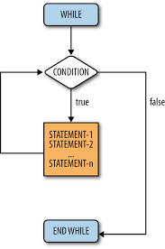

Loops A loop is an indication for a compiler to execute a block of statements repeatedly. In C Programming, we have three loops for,
while and do while loops. Every loop has an expression or condition, and based on the result, the compiler will either execute the code block or exit from the
loop. The execution process of the for loop is: 1. Initialization: We initialize the counter variable(s) here. For example, i=1. 2. Test condition: It will check for the condition against the counter variable. If the condition is True, then it will execute the statements inside the for loop. If the condition is False, then C Programming will exit from the loop. 3. After completing the iteration, it will execute the Increment and Decrement Operator inside the C for loop to increment or decrement the value. 4. Again it will check for the condition after the value incremented. As long as the condition is True, the statements inside the for loop will execute. Flow Chart Example Output: ||Nested For Loop|| Using a for loop within another for loop is said to be nested for loop. In nested for loop one or more statements can be included in the body of the loop. In nested for loop, the number of iterations will be equal to the number of iterations in the outer loop multiplies by the number of iterations in the inner loop. Syntax: Flow Chart  Example Output: Note: The variable a and b is initialized to 1 for the first time when the program execution starts in the for loop. The variable a belongs to outer for loop and a variable b belongs to inner for loop. for a = 1, inner for loop will be executed 5 times. Thus, total number of iterations is 25. || While Loop|| The while loop in C Programming is to repeat a block of statements for a given number of times until the given condition is False. While loop in C starts with the condition, if the condition is True, then statements inside the while loop will be executed. If the given condition is false, then it won’t be performed at least once. It means while loop may run zero or more time . Syntax: First, the compiler will check for the condition inside the While loop. If the condition is True, the statement or group of statements under the while loop block will execute. If the condition is False, the compiler will come out of the loop and execute other statements outside the while loop.  Example Output: Note: A variable a is initialized to 1 at the time of initializing a variable. The condition a = 5 is the test condition, which is tested for every iteration. A block followed by a while loop will be executed repeatedly until the test condition is true. a++ is used to increment the value of a every time after printing the value of a. ||Nested While Loop|| Using While loop within while loops is said to be nested while loop. In nested while loop one or more statements are included in the body of the loop. In nested while loop, the number of iterations will be equal to the number of iterations in the outer loop multiplies by the number of iterations in the inner loop which is most same as nested for loop. Syntax: Example Output Note: The variable a and b is initialized to 1 at the time of initializing variable. The condition a <= 5 is the outer test condition and b <= 5 is the inner test condition which is tested for every iteration. Here, the inner while loop will be executed for 5 times for every time the test condition in the outer loop is true. || Do While Loop|| The do while loop evaluates the condition only after the execution of the statements in its body.
The statements within the do-while loop executed at least once. A do while loop is also called as bottom tested loop. Example Output: I will display once Note: Although the test condition in the while loop may false for the very first time. The statements of do-while loop will be executed at least once. ||Nested Do While Loop|| Using do-while loop within do-while loops is said to be nested do while loop. Syntax: Flow chart  Example Output: Note: Simply, the outer do-while loop contains the inner do-while loop as a set of statements. Though, the test conditions of inner and outer do-while loops are false for the first time. Both the inner and outer statements of do-while loops are executed once, irrespective of their test conditions. |
    |
|
« Previous Next » |
|